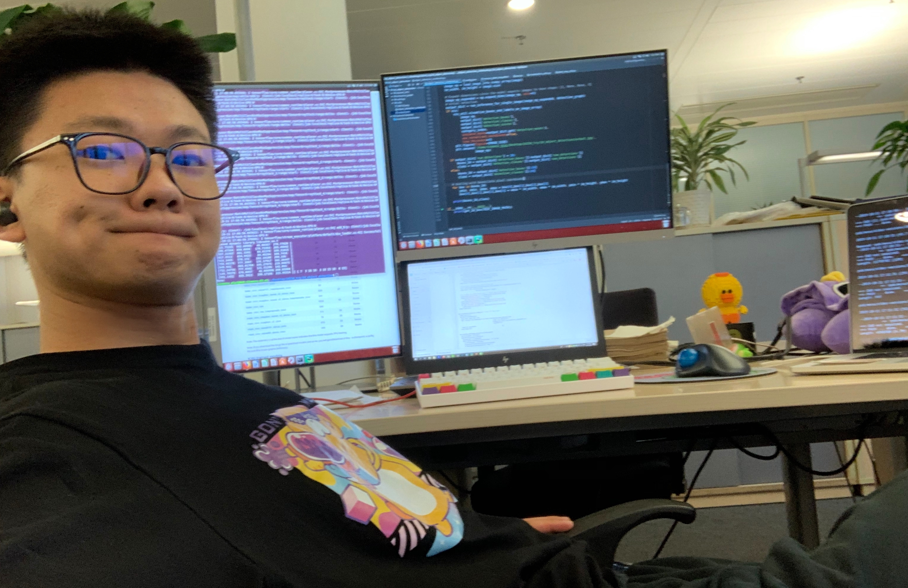

Intro
Welcome to my garden, please sit down and have a cup of tea ! If you are interested in my story, let me have you some minutes to introduce myself. My name is Meng, Fanbo, a machine learning enginner, graduated from Imperial College London. Now I am working at Digital Industy BU in Siemens Ltd. aiming solving industrial problems taking advantage of machine learning techniques.
You can check some of my working achievements in Work section. Also some learning notes(mostly hand draft when I learning some techniques) in Notes section. For more information, please check my cv by clicking this link: Download CV.
Work

- Artificial Intelligence has shown great success in academic research and daily scene, one can easily use a common computer or phone to enjoy AI in their daily life. But in industrial use cases, due to data insufficiency and some specific limts, most of AI algorithms cannot directly deploy on factory. My work in Siemens focuses on designing industrial-specific models based on cutting-edge AI techniques and utilizes them on real factory in application scenarios to save human effort and improve production efficiency. During industrial AI developing process, lot of challenges such as data-insuffiency, computing limitation, requirements of learning domain knowledge and consideration of software engineer frameworks involved. One significant work on this is mu work in SEWC. Click here to find an article reporting my work in the second-most digitalized factory in the world (also the best in China)!
- For building simulation scenes in synthetic world to train ADAS algorithms, Prescan is widely used among ADAS engineers. However, traditional ADAS requires huamn efforts on manually building up synthetic scene in Prescan on first stage. My work covers a plugin in Prescan, which can automatically detect traffic information and render in Prescan using AI algorithms. Click here to see a demo of how we rebuild synthetic scene in Prescan using AI.
- Object detection is nothing novel in computer vision and machine learning study area. However siginificant amount of computing resources and training data play important rules in developing an object detection model, this makes users who want to train object detection models in edge devices(HUAWEI Phone) difficult. My work in HUAWEI 2012(before Siemens) engages developing light-weight object detection model which can be easily deployed on HUAWEI Phone and even support training by users. Since confidential regulations in HUAWEI, only an overview of object detection models and methodologies can be found here.
- Object detection can be also used in industrial use cases. Check the video showing my work on using object detection model to detect HMI product assembling quality.
For more details about my work, please check my CV.
Notes
Mother(shown in image) always told me never stop learning. Compared with writing blogs, I prefer handwriting when learning techinques and thoeries. This section acts as a backup for me, storing my learning notes and summaries.
Learning notes for Deep Learning book:
Chapter 6. Deep feed forward networks
Chapter 7. Regularization for Deep Learning
Chapter 8. Optimization for Training Deep Models
Chapter 9. Convolutional Networks
Chapter 10. Sequence Modeling Recurrent and Recursive Nets
Chapter 11 Practical Methodology
Chapter 12 Applications
Chapter 13,14 Linear Factor Models, Auto-encoder. .pdf
Chapter 15 Representation Learning
Chapter 16 Structured Probabilistic Models for Deep Learning
Chapter 17 Monte Carlo Methods
Chapter 18 Confront Partition Function
Chapter 19. Approximate Inference
Chapter 20 Deep Generative Models
Contact
Email:13898683876@163.com
Mobile:15011146030